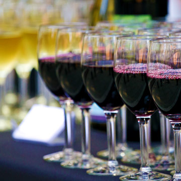

Home »
Schedule of events
Featured events
-

Banana Slug Lunch: Dine and Rewind
Saturday 12 - 2 p.m. | Porter College Dining Hall - $20Remember dining halls? Relive some old memories over a delicious lunch at Porter. Short welcome and remarks from the Chancellor.
-

Teach-Ins - An Academic Afternoon
Saturday 2:30 - 4 p.m. | Porter College RoomsGo back to class for an afternoon - choose from a selection of lectures from notable faculty:
• Alan Alan Christy, East Asian studies
• David Deamer, Biomolecular Engineering
• William Domhoff, Sociology and Psychology
• Harry Noller, MCD biology
• Jane Pinckard, Games and Playable Media -

Alumni Wine Reception
Saturday 4 - 6 p.m. | Porter Dining Hall Patio Unwind with a glass of wine or a cold beer and continue the Teach-In conversations with fellow Banana Slugs.

-
Making the Institute: Three Conversations
9 a.m. – 4:30 p.m. | University Center, Alumni Room UC Santa Cruz has launched the planning process for a groundbreaking new interdisciplinary Institute of the Arts and Sciences. To inform that process, we have gathered an exceptional group of practitioners and thinkers whose work engages the arts, the sciences and social sciences, museums, performance, architecture, and landscape design. We invite you to join us on April 26 to take part in three conversations that will help shape the new institute's program and design.
Find out more and register » -
Marine Lab Tour
10 a.m. – 5 p.m. | Seymour Marine Discovery Center at Long Marine Lab Come visit the Seymour Marine Discovery Center during alumni weekend for the opportunity to take part in one of our daily, docent-led tours. Marvel at one of the largest blue whale skeletons on display in the world, learn about current marine mammal research taking place at UCSC's Long Marine Lab, and see some of the lab's resident marine mammals. Docent-led tours are available several times throughout the day.
Find out more » - Academic Medicine Career Panel
11 a.m. - 12:30 p.m. | Humanities 1, Room 210 Alumni and parents will discuss their experiences working in different areas of the medical industry.
Find out more and register » - Alumni in Law Career Panel
1:30 – 3 p.m. | Humanities 1, Room 210 Join us for a lively panel of alumni (1971-2005,) who will discuss how their Liberal Arts and Humanities degrees helped pave their path to a variety of law practices.
Find out more and register » -
The Sociology Department Hosts: Jessica Roy Memorial Colloquium
4 - 6 p.m. | Namaste LoungePlease join Giovanna Di Chiro, Lang Visiting Professor for Issues of Social Change, Swarthmore and UCSC PhD graduate in History of Consciousness for a talk, "Embodied Ecologies: Connecting Sustainability and Environmental Justice."
Find out more and register » -
Social Sciences Distinguished Alumni Award Reception
4 – 6 p.m. | La Feliz Room at the Long Marine Lab — $10Join us for a reception honoring this year's alumni recipient for his/her outstanding contributions to society.
Online registration closed » - African American Resource and Cultural Center Welcome Reception
5:30 – 7:30 p.m. | Hotel Paradox Help build community among alumni, students, and allies. There will be light refreshments and a no-host bar.
Find out more and register » - Basketball Wine and Cheese Reception
5:30 - 7:30 p.m. | Merrill Cultural Center — $25Join the men's basketball team, past and present, to share stories, renew old friendships, and try some delicious wines with cheese! We will also be joined by Michael Phillips, owner and winemaker of Michael David Winery, home of 7 Deadly Zins.
Find out more and register » - Hillel Hosts: Alumni Shabbat
6:15 - 9 p.m. | Santa Cruz HillelJoin Hillel students for Shabbat services and a delicious FREE home-cooked meal. This is a great chance to reconnect with old friends, meet new ones, and schmooze with students about life on campus today.
Find out more and register » - UCSC's Got Talent
7 - 10 p.m. | Stevenson Event CenterJoin the Office of Internal Affairs for our first annual UCSC's Got Talent. Watch current UCSC students from all colleges perform their talents as they compete for a $2,000 scholarship provided by the Alumni Association and other alumni! End a long day by watching the current students showcase their skills and meet slugs of all ages.
Learn more » - Cowell Coffee in the Courtyard
8:30 - 10 a.m. | Cowell CourtyardStart your Saturday by enjoying brunch in the company of friends. Mingle, laugh, and reminisce.
Find out more and register » - Walking Tour-Wild, Wooly, and Wonderful: Keep UCSC Natural
9 – 10:30 a.m. | Porter College, Koi Pond Come celebrate the 25th anniversary of the UCSC Natural Tour. Join Gage Dayton for a morning walk through the most beautiful, pristine areas of campus.
Sold out » - African American Resource and Cultural Center Hosts, Engaging the Generations: Roundtable Discussion with Alumni and Students
9 a.m. - 2 p.m. | Oakes Learning Center This event will bring together alumni, students, and friends to talk about issues in the community as well as opportunities for mentorship between alumni and students. There will be light refreshments in the morning and lunch will be provided.
Find out more and register » - Leaving a Legacy
9:30 - 11:30 a.m. | Porter Study CenterHow will you build your legacy at UCSC? Come to this session to learn about your legacy planning options. Specifically, you will learn about resources available to help you create your estate plan and include UCSC in it. Pastries, fruit and refreshments will be provided.
Find out more and register » - Preserving Your Memories for the UCSC Archives
10 a.m. – 2 p.m. | McHenry LibraryBring your old photos of the campus to the library, and staff will help scan and add them to the campus history site. We'll return your originals and provide you with a free digital copy.
Find out more and register » - Oakes Celebration of Don Rothman's Life and Achievements
10 - 11:30 a.m. | Oakes 106Join Oakes as we honor and remember Don Rothman. As part of the ceremony, we unveil a plaque at Oakes recognizing his nearly 40 years of service that brightened the lives of students, faculty, and staff.
Find out more and register » -
Digital Arts & New Media Program MFA Exhibition
10 a.m. – 4 p.m. | Digital Arts Research Center (DARC) Enjoy an exhibition by graduate students who use advanced technologies for creative potential and social impact.
Find out more » - Marine Lab Tour
10 a.m. - 5 p.m. | Seymour Marine Discovery Center at Long Marine LabCome visit the Seymour Marine Discovery Center during Alumni Weekend for the opportunity to take part in one of our daily, docent-led tours. Marvel at one of the largest blue whale skeletons on display in the world, learn about current marine mammal research taking place at UCSC's Long Marine Lab, and see some of the lab's resident marine mammals. Docent-led tours are available several times throughout the day.
Find out more » -
Cowell Alumni Discussion: Entertaining Ideas
10 a.m. – 11:30 a.m. | Cowell College, Page Smith LibraryJoin Cowell alums in the Pursuit of Truth with a fascinating lecture discussing the arts featuring Mary-Kay Gamel, Professor of Classical Studies and Feminist Studies; Addi Somekh (Cowell '94), self-taught balloon artist; and Paul Rabwin (Cowell '70), producer of The X-Files.
Find out more and register » - Porter World Cafe: Wiser Together
10:15 a.m. - 12 p.m | Porter College, Hitchcock LoungePorter alums unite for a morning to inspire communication and conversation meant to bring various perspectives to the table, provoke thought, and create action in pursuit of common aims.
Find out more and register » - Merrill Moat Day
11 a.m. - 2 p.m. | Merrill MoatTie-dye a Merrill t-shirt and check out the new Moat paintings in progress. Also be sure to see the Merrill renovation plans!
Find out more and register » - Then and Now Alumni Walking Tour
11 a.m. - 12 p.m. | Meet at Porter CircleAlumni walking tour guided by student admission ambassadors — revisit old haunts and see what's new on campus.
Find out more and register » - Honoring the 7 Generations: 2nd Annual UCSC Sophia Garcia Robles Drum Feast
11 a.m. - 4 p.m. | Oakes Lower LawnPlease join the American Indian Resource Center, students, staff, faculty, and community members for our annual powwow during Alumni Weekend.
Find out more and register » -
 Banana Slug Lunch: Dine and Rewind
Banana Slug Lunch: Dine and Rewind
12 – 2 p.m. | Porter College Dining Hall — $20Remember dining halls? Relive some old memories over a delicious lunch at Porter. Short welcome and remarks from the Chancellor.
Find out more » -
Minicourse in Coastal Sustainability with Gary Griggs
1 – 4 p.m. | Long Marine Lab Celebrate the 35th anniversary of Long Marine Lab with Gary Griggs - who is celebrating 45 years teaching at UCSC! Find out what we're learning about coastal sustainability and where our research is likely to go in the future.
Learn more » -
Then and Now Alumni Walking Tour
2 – 3 p.m. | Meet at Porter Circle Alumni walking tour guided by student admission ambassadors — revisit old haunts and see what's new on campus.
Find out more and register » -
Crown Alumni Reception
2 – 4 p.m. | Crown Provost HouseJoin fellow Crown alumni, friends, and current students for refreshments at Provost Joel Ferguson's house. Reconnect with your college, learn what's new at Crown, and network. Eat, drink, reminisce.
Find out more and register » - Feminist Poetry with Brenda Shaughnessy
2 - 6 p.m. | Humanities 1, Room 210Please join Women's studies/Feminist studies alumni, classmates, and faculty for a delicious reception at 2 p.m. Then, at 3 p.m., join Brenda Shaughnessy ('93, WMST/LIT) for a talk, "Feminism & Poetry, Empowerment & Passion." At 4:30 p.m., we will have a Feminist studies faculty panel on "The Vibrant State of the FMST Department" to discuss the launching of the feminist studies graduate program, the UC Presidential Chair in Feminist Critical Race and Ethnic Studies, current curriculum, faculty research, and more.
Find out more and register » -
Teach-Ins — An Academic Afternoon
2:30 - 4 p.m. | Porter College RoomsGo back to class for an afternoon – choose from a selection of lectures from notable faculty:
• Professor Alan Christy, East Asian studies
• Professor David Deamer, Biomolecular Engineering
• Professor G. William Domhoff, Sociology and Psychology
• Professor Harry Noller, MCD biology
• Jane Pinckard, Games and Playable Media
Find out more and register » - Crown Memorial for former Provost Eugene Cota-Robles
3:30 - 5 p.m. | Crown Senior CommonsJoin Cota-Robles' son Erik, Rosalee Cabrera, Richard Vasquez, Hal Hyde, and other former faculty, staff, and alumni that were touched by this inspiring early leader of UCSC and Crown College share memories and reminisce about his notable impact to campus.
Find out more and register » -
Alumni Wine Reception
4 – 6 p.m. | Porter Dining Hall PatioUnwind with a glass of wine or a cold beer and continue the Teach-In conversations with fellow Banana Slugs.
Find out more » -
Arts Alumni Exhibition: Deborah Barlow
4:30 - 6:30 p.m. | Porter Faculty Gallery Join us for a reception for arts alumni, friends, and family. Deborah Barlow will present an informal talk about her work, "Material Ephemera." Refreshments provided.
Find out more and register » -
Sesnon Art Gallery Hosts: Dinner Parties Exhibition
4:30 - 6:30 p.m. | Sesnon Art Gallery Join the Sesnon Art Gallery for a reception for alumni interested in food, agriculture, and the arts.
Find out more and register » - Lavender Reception: Celebrating 15 Years of the Cantú Queer Center
5 - 7 p.m. | Cantú Queer CenterCenter staff, students, and fellow alumni welcome the opportunity to reconnect! We'll let you know what's new and exciting at the Cantú GLBTI Center, and we would love to hear from you as well!
Find out more and register » - Computer Engineering 25th Reunion
5 - 6:30 p.m. | Porter College, Hitchcock Lounge Join fellow alums to celebrate 25 years of the Computer Engineering Department!
Find out more and register » - J. Herman Blake Tribute Dinner
6 - 9 p.m. | University Center, Bhojwani Room — $75 Oakes College Founding Provost J. Herman Blake will join us as we honor the foundation he built and the legacy he's left at UCSC.
Sold out » - Good Times: Pizza & Beer!
6 - 8 p.m. | Porter College, Study Center Roll up your day with an old-school night with college classics—pizza and beer.
Find out more and register » - Young Alumni Networking Mixer
8 - 10 p.m. | Motiv A night of reminiscing, remembering, and revelry. Come back, bring a friend, and join us as we toast to life after college.
Find out more and register » - Lick Observatory 125th Anniversary
8 - 11 p.m. | Lick Observatory Tour the observatory and take a look through the telescopes while you're there!
Sold out » - Merrill College: Honoring Field Study & Merrill Renewal
9:30 a.m. - 12 p.m. | Merrill Provost HouseMerrill College is celebrating its 45th anniversary with a conversation on the founding values of Merrill College. Join Provost Elizabeth Abrams and founding director of the Field Study program Nick Royal in a conversation about reinvigorating Merrill's founding values in college life today.
Find out more and register » - Cowell College Hosts: Dizikes Brunch
10 a.m. – 12 p.m. | Cowell Provost House A brunch for Cowell alumni "In the Company of Friends" as a prelude to the annual Dizikes Concert.
Find out more and register » - The Aesthetic Studies Major: What in the World?
10 a.m. – 12 p.m. | Porter College, Hitchcock Lounge How many times have you tried to explain what in the world it meant to graduate with a major in "aesthetic studies"? We are the original, experimental, interdisciplinary, trailblazing, before Slug was Slug arts champions and practitioners. How did we do it? Come listen to former classmates tell their story of completing the requirements for this major. Hear how it was designed, how it evolved, and where it is now. Light refreshments provided.
Find out more and register » - Stevenson Alumni Brunch
10:00 a.m. - 1 p.m. | Stevenson Provost HouseStevenson Provost Alice Yang invites Stevenson alumni to join her in her home to reminisce with fellow alumni and learn what is happening at Stevenson today.
Find out more and register » - Digital Arts & New Media Program MFA Exhibition
10:00 a.m. - 4:00 p.m. | Digital Arts Research Center (DARC) Enjoy an exhibition by graduate students who use advanced technologies for creative potential and social impact.
Find out more » - Marine Lab Tours
12 - 5 p.m. | Seymour Marine Discovery Center at Long Marine Lab Come visit the Seymour Marine Discovery Center during Alumni Weekend for the opportunity to take part in one of our daily, docent-led tours. Marvel at one of the largest blue whale skeletons on display in the world, learn about current marine mammal research taking place at UCSC's Long Marine Lab, and see some of the lab's resident marine mammals. Docent-led tours are available several times throughout the day.
Find out more » - Dizikes Concert: Highlighting the Madrigals and Acquire A Cappella Groups
12:30 - 1:30 p.m. | Humanities Lecture Hall Humanities Lecture Hall
Find out more and register » - Stevenson Alumni Panel
1 – 3 p.m. | Stevenson College (Fireside, Silverman, Senior Commons, and Stevenson 175)Stevenson alumni will share career advice with current Stevenson students.
Find out more and register » - Leviathan: Celebrating 40 years of Jewish Journalism at UC Santa Cruz
3 - 4:30 p.m. | Stevenson College, Fireside LoungeCome celebrate 40 years of Jewish journalism by recounting the history of the Leviathan with a panel discussion and exhibition.
Find out more and register »
APR
26
APR 27
APR 28
- Home
- Schedule of events
- Places to stay
- Parking and shuttles
- Share your photos
- Invite your friends
- Join Facebook group
- Volunteer opportunities
- Campus activities

Special Events Office
UC Santa Cruz
2155 Delaware Avenue
Santa Cruz, CA 95060
Email: specialevents@ucsc.edu
Phone: (831) 459-5003